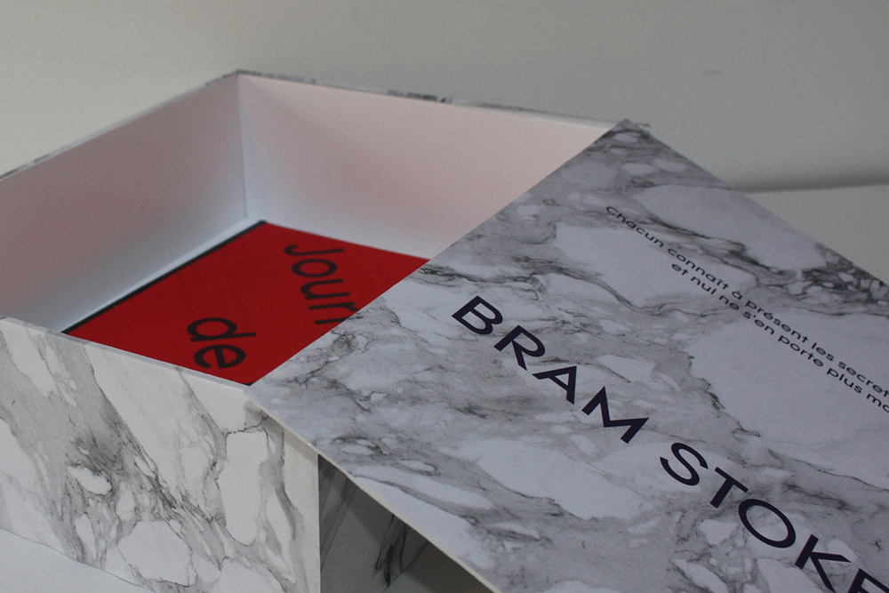
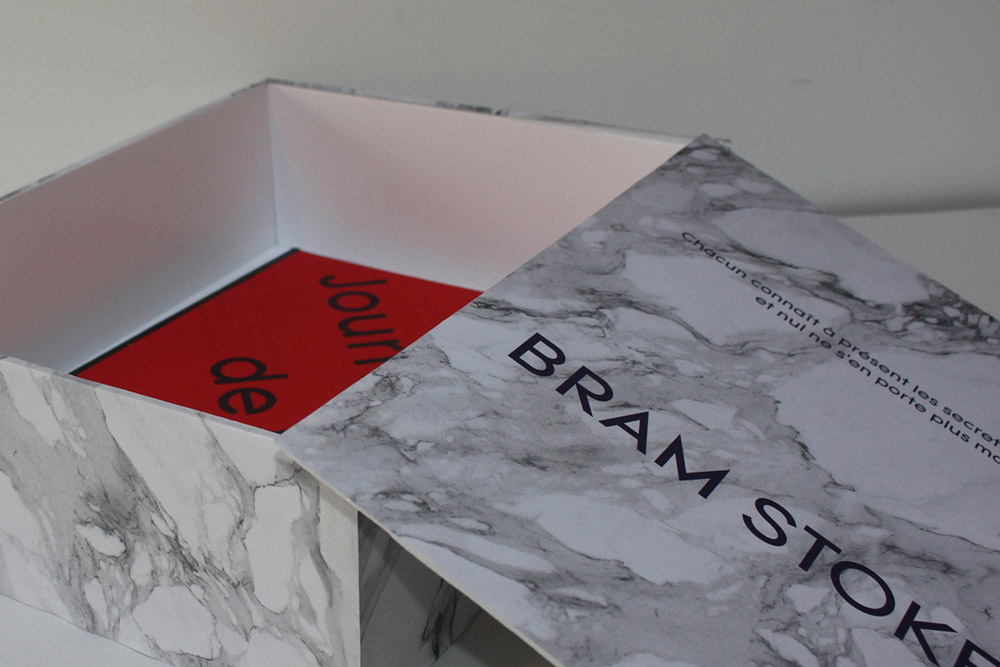

Avant d'écrire Dracula, Bram Stoker s'était investi dans près de 15 années de recherches et
correspondances avec ses contemporains tels Joseph Sheridan le Fanu, Walt Whitman ou Arminius Vambéry,
géographe et orientaliste hongrois.
J'ai supposé que l'épistolarité de "Dracula" découle de toutes ces correspondances, entre autres.
Ce cercueil en carton plume contient le journal fictif d'un Bram Stoker qui aurait vécu à notre époque
et aurait usé des moyens contemporains pour faire ses recherches sur le voïvode valaque Vlad Tepes III
"l'Empaleur" en vue d'écrire son roman "Dracula".
Il contient également une carte de Roumanie, relatant et comparant son parcours à celui de son
personnage, Jonathan Harker.
À fiction sombre, images sombres.
 
